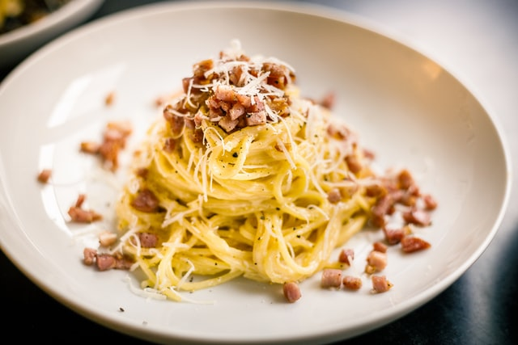

Carbonara

Description
Colloquially known as "Coal Miners" pasta, this basic dish is delicious and easy
Ingredients
- 100g pasta (any similar to spaghetti will work)
- 100g Guanciale (Bacon or Pancetta wil also work well)
- Salt and Pepper
- 2 eggs
- 100g parmesean cheese
Steps
- Start by cooking the pasta
- While the pasta is cooking, cook the guanciale in a pan. Once crispy, turn pan off to let cool.
- Add parmesean, salt & pepper, 1 whole egg, and 1 egg yolk to a mixing bowl. Mix well until the mixture has a creamy consistency
- Once the pasta is done, add it to the guanciale. Mix well.
- Add the egg/paremsean mixture. Add slowly while mixing. We do not want the heat of the pasta or pan to scramble the egg but instead turn it into a custardy sauce
- Serve in a bowl. Free to top with more cheese.